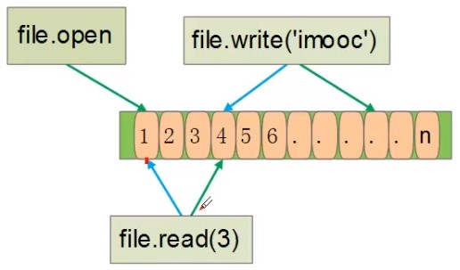

[TOC]
文件打开方法：open（name, [mode[buf]]） - name：文件路径 - mode：打开方式 - r 只读方式打开，文件必须存在 - w 只写方式打开，文件不存在创建文件，文件存在则清空文件内容 - a 追加方式打开，文件不存在创建文件 - r+/w+ 读写方式打开，r+ 文件必须存在，w+ 文件不存在创建文件，文件存在则清空文件内容 - a+ 追加和读写方式打开，文件不存在创建文件 - rb，wb，ab，rb+，wb+，ab+：二进制方式打开 - buf：缓冲buffering大小
文件读取方式： read（[size]）：读取文件（读取size个字节，默认读取全部） readline（[size]）：读取一行（读取字节数为：[size, len(line)]） readlines（[size]）：读取完文件，返回每一行所组成的列表（返回字节数为：io.DEFAULT_BUFFER_SIZE=8192 左右个，是左是右要看第8192个字节在行的什么位置，反正要读到完整的行） iter ：使用迭代器读取文件，适合读取大文件
文件写入方式： write（str）：将字符串写入文件 writelines（sequence_of_strings）：写多行到文件
write只是将内容写入OS内核的缓冲区，并没有立刻写入磁盘，可以使用flush()和close()强制写入磁盘；写入数据量大于或者等于写缓存，写缓存同步到磁盘；
Python 文件为什么要关闭 1、将写缓存同步到磁盘； 2、linux系统中每个进程打开文件的个数是有限的； 在文件 /proc/pid/limits 中，Max open files : soft limit(1024), Hard limit(4096) ， 操作系统可打开的文件描述符个数为1024 3、如果打开文件数到了系统限制，在打开文件就会失败；
文件写入和读取问题： 1、写入文件后，必须打开才能读取写入内容 2、读取文件后，无法重新再次读取读过的内容
文件读取写入文件指针移动过程：

seek（offset[，whence]）：移动文件指针； - offset：偏移量，可以为负数； - whence：偏移相对位置； - os.SEEK SET：相对文件起始位置； - os.SEEK CUR：相对文件当前位置； - os.SEEK END：相对文件结尾位置；
file.closed：文件是否关闭；
标准文件 文件标准输入：sys.stdin； input("")在终端录入，由此实现 文件标准输出：sys.stdout； print("")由sys.stdout.write("")实现 文件标准错误：sys.stderr；
文件命令行参数 sys模块提供sys.argv属性，通过该属性可以得到命令行参数；sys.argv是字符串组成的列表；
import sys
if __name__ == '__main++':
for arg in sys.argv:
print arg
f=open('aa','w')
# f.write(u'编程’) 直接写入unicode出错
a=unicode.encode（u'编程’，‘utf-8'）
f.write(a)
我们如何创建一个utf-8或者其他编码格式的文件？
f=codecs.open('test.txt','w','utf-8')
Linux文件系统一切皆文件，文件包括：磁盘（ext2，ext4）文件，NFS文件系统，各种外设（sd卡，USB设备）等； Linux文件系统简单示意图
Python操作文件流程
os方法 - os.read（fd，buffersize）：读取文件 - os.write（fd，string）：写入文件 - os.lseek（fd，pos，how）：文件指针操作 - os.close（fd）：/关闭文件 - access(path, mode) 判断该文件权限：F_OK存在，权限：R_OK，W_OK.X_OK - listdir(path) 返回当前目录下所有文件组成的列表 - remove(path) 删除文件 - rename(old，new) 修改文件或者目录名 - mkdir(path[，mode]) 创建目录 - makedirs(path[，mode]) 创建多级目录 - removedirs(path) 删除多级目录 - rmdir(path) 删除目录（目录必须空目录）
os.path方法 - exists(path) 当前路径是否存在 - isdir(s) 是否是一个目录 - isfile(path) 是否是一个文件 - getsize(filename) 返回文件大小 - dirname(p) 返回路径的目录 - basename(p) 返回路径的文件名
def walkdir(rootdir):
#三个参数：分别返回1.父目录 2.所有文件夹名字（不含路径） 3.所有文件名字
for parent,dirnames,filenames in os.walk(rootdir):
for dirname in dirnames:
print("dir path: " + os.path.join(parent, dirname))
for filename in filenames:
print("file path:" + os.path.join(parent,filename))
glob
import glob
glob.glob('d:\a\*\*.txt')
glob.glob('./glob_?.png')
glob.glob('../glob_[0-9].png')
glob.glob('glob_[0-9].*')
iglob 获取一个迭代器(iterator)对象，使用它可以逐个获取匹配的文件路径名。与glob.glob()的区别是：glob.glob()同时获取所有的匹配路径，而glob.iglob()一次只获取一个匹配路径。
import glob
files = glob.iglob('*.png')
for png in files:
print(png)
多模式匹配来搜索文件
import itertools as it, glob, os
def multiple_file_types(*patterns):
return it.chain.from_iterable(glob.glob(pattern) for pattern in patterns)
for filename in multiple_file_types("*.txt", "*.py"): # add as many filetype arguements
realpath = os.path.realpath(filename)
print realpath